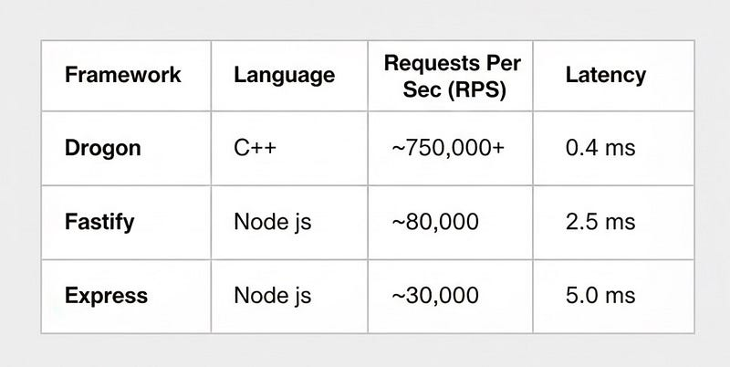

In the world of distributed systems and microservices, we often trade raw performance for developer velocity. Some developers default to Node.js for its asynchronous I/O model or Go for its concurrency primitives. But there comes a point in every high-scale system’s lifecycle where latency requirements become non-negotiable, and the overhead of a runtime environment becomes a bottleneck.
In this story, we are going to dissecting a C++ based HTTP application framework that consistently dominates the benchmarks, often processing requests 10x to 50x faster than high-level frameworks such as Node.js.
Why use C++ ?
Historically, writing a web server in C++ was a nightmare of manual memory management and socket handling. However, modern C++ (C++14/17/20) has introduced features like smart pointers, lambdas, and coroutines that make it surprisingly ergonomic, almost like writing Typescript, but with the raw power of machine code.
The “Magic” of Drogon lies in its architecture
- Non-blocking I/O: Similar to Node.js, but without the V8 engine overhead.
- One Loop Per Thread: Unlike Node’s single-threaded event loop, Drogon utilizes a reactor pattern where each CPU core runs its own event loop. This allows it to scale linearly with hardware.
- Compile-time Reflection: It creates routes and maps JSON to objects at compile time, removing runtime reflection costs.
The Code Showdown
Let’s look at how we actually implement common API patterns. Many developers fear C++ is too verbose. To debunk this, let’s compare Express.js (Node) and Drogon (C++) side-by-side.
The “Hello World” API
const express = require('express');
const app = express();
const PORT = 3000;
app.get('/', (req, res) => {
res.json({ message: "Hello World" });
});
app.listen(PORT, () => {
console.log(`Express server running at http://localhost:${PORT}`);
});#include <drogon/drogon.h>
int main() {
drogon::app().registerHandler("/",
[](const drogon::HttpRequestPtr &req,
std::function<void (const drogon::HttpResponsePtr &)> &&callback) {
Json::Value json;
json["message"] = "Hello World";
auto resp = drogon::HttpResponse::newHttpJsonResponse(json);
callback(resp);
}
);
drogon::app().addListener("0.0.0.0", 3000);
LOG_INFO << "Drogon server running at http://localhost:3000";
drogon::app().run();
return 0;
}Handling query parameters
app.get(’/search’, (req, res) => {
const query = req.query.q;
res.send(`Searching for: ${query}`);
});app().registerHandler("/search",
[](const HttpRequestPtr &req, std::function<void (const HttpResponsePtr &)> &&callback) {
std::string query = req->getParameter("q");
auto resp = HttpResponse::newHttpResponse();
resp->setBody("Searching for: " + query);
callback(resp);
});Using middleware (Interceptors)
const authMiddleware = (req, res, next) => {
if (!req.headers[’authorization’]) return res.sendStatus(401);
next();
};
app.get(’/admin’, authMiddleware, (req, res) => { /*...*/ });class AuthFilter : public drogon::HttpFilter<AuthFilter> {
void doFilter(const HttpRequestPtr &req, FilterCallback &&fcb, FilterChainCallback &&fccb)
override {
if (req->getHeader("Authorization").empty()) {
fcb(HttpResponse::newHttpResponse(k401Unauthorized, "No Auth"));
return;
}
fccb(); // Next
}
};
app().registerHandler("/admin", handlerFunc, {Get, "AuthFilter"});The Benchmark: Numbers Don’t Lie
This is where the architectural differences manifest into reality. When we subject both servers to high concurrency, the results are staggering.
Following are the results according to the TechEmpower Web Framework Benchmarks (Round 22/23), which measures requests per second (RPS) and latency

Drogon (C++) handles roughly 25x more requests than Express on the same hardware. In the 99th percentile (p99), Node.js can spike due to Garbage Collection pauses. Drogon (C++), having manual control over memory (and RAII), maintains a flat latency curve even under heavy load.
Conclusion
As a developer, you should be versatile enough to use correct tool for the correct job. Hence, stick to something like Node.js for rapid development of IO-heavy, logic-light services but C++ can utilised for “Tier-1” high-throughput services where latency is money.
Understanding the anatomy of asynchronous I/O in Node.js gave us the ability to write non-blocking code. Moving to C++ with frameworks like Drogon gives us that same non-blocking capability but removes the abstraction tax.
You can also check out more such powerful frameworks in C++ such as